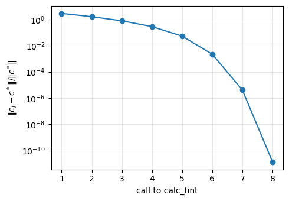
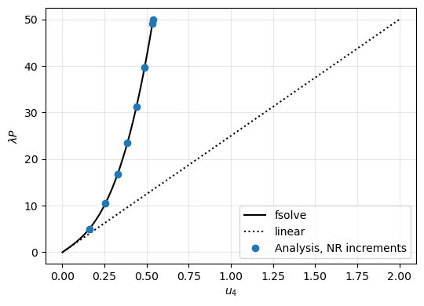

Non-linear static analysis with the Newton-Raphson method#
A non-linear static analysis finds the solution vector \(\boldsymbol{c}\) whose internal force vector balances the external force vector scaled by the load factor \(\lambda\),
With Analysis it requires four callables, which calculate the external force vector, the internal force vector, the constitutive stiffness matrix \(\boldsymbol{K}_C\) and the geometric stiffness matrix \(\boldsymbol{K}_G\). The Newton-Raphson method, NL_method='NR', the default, corrects the solution with the tangent stiffness matrix \(\boldsymbol{K}_T = \boldsymbol{K}_C + \boldsymbol{K}_G\),
until the residual \(\boldsymbol{R}\) is small enough. When \(\boldsymbol{K}_T\) is the exact derivative of \(\boldsymbol{F}_{int}\), the convergence is quadratic (Crisfield 1991, Sections 1.2.2 and 1.2.3, pp. 8-13). The load factor goes from zero to one in increments, see newton_raphson._solver_NR.
Reference. Crisfield, M.A., Non-linear Finite Element Analysis of Solids and Structures, Volume 1: Essentials, John Wiley & Sons, Chichester,
[1]:
%matplotlib inline
import os
import sys
# the helper functions of the tests are imported from the folder tests/
sys.path.insert(0, os.path.join('..', 'tests'))
import numpy as np
import matplotlib.pyplot as plt
from scipy.optimize import fsolve
from analytic_problems import Problem, convergence_orders
Chain of hardening springs#
The class Problem of tests/analytic_problems.py, used in the unit tests, wraps an analytic problem into the four callables of Analysis, creates the analysis with its method analysis(), and records the solution vector of every call to the internal force vector, from which the iterations are counted.
The problem is a chain of four springs of stiffness 100 fixed at one end, with a cubic hardening of each degree of freedom, loaded at the free end by \(P = 50\):
with \(\boldsymbol{a} = 50\,[1\ 2\ 3\ 4]^\top\), the cubes taken term by term and \(\boldsymbol{K}_C + \boldsymbol{K}_G\) the exact derivative of \(\boldsymbol{F}_{int}\). The function below is hardening_springs of tests/analytic_problems.py:
[2]:
def hardening_springs(P=50.):
# chain of 4 springs with cubic hardening: fint = K u + a u**3
n = 4
K = 100.*(2*np.eye(n) - np.eye(n, k=1) - np.eye(n, k=-1))
K[-1, -1] = 100.
a = 50.*np.arange(1, n+1)
fext = np.zeros(n)
fext[-1] = P
return Problem(fext, lambda u: K @ u + a*u**3, K,
lambda u: np.diag(3*a*u**2))
The reference solution of \(\boldsymbol{R}(\boldsymbol{c}, \lambda) =
\boldsymbol{0}\) at any \(\lambda\) is calculated independently with scipy.optimize.fsolve, the hybrid Powell method of MINPACK, with its Jacobian \(\boldsymbol{K}_T\) and the relative tolerance xtol=1e-13, starting from the linear solution:
[3]:
def reference(p, lbd=1.):
c0 = np.linalg.solve(p.kC, lbd*p.fext)
return fsolve(lambda c: p.fint(c) - lbd*p.fext, c0,
fprime=lambda c: p.kC + p.kG(c), xtol=1e-13)
Full load in one increment#
With initialInc=1., the full load is applied in a single increment, starting from the linear solution \(\boldsymbol{K}_{C0}^{-1} \boldsymbol{F}_{ext}\). The relative error of each iterate \(\boldsymbol{c}_i\) against the reference \(\boldsymbol{c}^*\), and the order of convergence estimated by \(\log e_{i+1}/\log e_i\) in the asymptotic range (\(10^{-13} < e_{i+1}\), \(e_i < 10^{-2}\), convergence_orders of tests/analytic_problems.py), show the quadratic
convergence:
[4]:
p = hardening_springs()
p.analysis(initialInc=1.)
p.an.static(NLgeom=True, silent=True)
ref = reference(p)
errors = [np.linalg.norm(c - ref)/np.linalg.norm(ref) for _, c in p.fint_calls]
orders = convergence_orders(errors)
print('increments:', p.an.increments)
print('calls to calc_fint:', len(p.fint_calls))
print()
print(f'{"call":>4s} {"||c_i - c*||/||c*||":>20s}')
for i, e in enumerate(errors):
print(f'{i+1:4d} {e:20.3e}')
print()
print('estimated orders of convergence:', np.round(orders, 2))
increments: [1.0]
calls to calc_fint: 8
call ||c_i - c*||/||c*||
1 2.977e+00
2 1.661e+00
3 8.056e-01
4 2.907e-01
5 5.390e-02
6 2.247e-03
7 4.061e-06
8 1.321e-11
estimated orders of convergence: [2.04 2.02]
The converged solution against the reference, with the relative equilibrium residual \(\|\boldsymbol{R}\|/\|\lambda \boldsymbol{F}_{ext}\|\):
[5]:
c = p.an.cs[-1]
print(f'{"dof":>3s} {"u (Analysis)":>16s} {"u (fsolve)":>16s} {"rel. diff.":>10s}')
for i in range(c.size):
print(f'{i+1:3d} {c[i]:16.12f} {ref[i]:16.12f} {abs(c[i] - ref[i])/abs(ref[i]):10.1e}')
print()
for name, ci in [('Analysis', c), ('fsolve', ref)]:
R = p.fint(ci) - p.fext
print(f'||R||/||F_ext||, {name}:', np.linalg.norm(R)/np.linalg.norm(p.fext))
fig, ax = plt.subplots(figsize=(5, 3.5))
ax.semilogy(np.arange(1, len(errors) + 1), errors, 'o-')
ax.set_xlabel('call to calc_fint')
ax.set_ylabel(r'$\|c_i - c^*\|/\|c^*\|$')
ax.grid(True, which='both', alpha=0.3)
plt.tight_layout()
plt.show()
dof u (Analysis) u (fsolve) rel. diff.
1 0.112250433936 0.112250433934 1.8e-11
2 0.225208054582 0.225208054578 1.8e-11
3 0.349587927744 0.349587927738 1.6e-11
4 0.538053413406 0.538053413400 1.0e-11
||R||/||F_ext||, Analysis: 2.1866724013401447e-11
||R||/||F_ext||, fsolve: 9.431276279123788e-15

Incremental analysis#
The analysis can also be performed in increments, with initialInc defining the size of the first load increment; the following increments grow after a converged increment, limited by maxInc, and the last one ends at the load factor 1. Each increment starts from a predictor extrapolated from the previous converged increment. Each converged increment against the reference at its load factor:
[6]:
p = hardening_springs()
p.analysis(initialInc=0.1)
p.an.static(NLgeom=True, silent=True)
print('calls to calc_fint per increment:', p.calls_per_step())
print()
print(f'{"lambda":>8s} {"u_4 (Analysis)":>15s} {"u_4 (fsolve)":>15s}'
f' {"max rel. diff. dofs":>20s}')
refs = []
for lbd, c in zip(p.an.increments, p.an.cs):
r = reference(p, lbd)
refs.append(r)
print(f'{lbd:8.4f} {c[-1]:15.10f} {r[-1]:15.10f}'
f' {np.max(np.abs(c - r)/np.abs(r)):20.1e}')
calls to calc_fint per increment: [5, 5, 5, 4, 4, 4, 4, 3]
lambda u_4 (Analysis) u_4 (fsolve) max rel. diff. dofs
0.1000 0.1593569172 0.1593569172 1.6e-15
0.2111 0.2560840154 0.2560840154 5.3e-12
0.3346 0.3271712572 0.3271712572 3.7e-16
0.4717 0.3864181446 0.3864181446 1.3e-11
0.6241 0.4391026701 0.4391026701 2.7e-13
0.7935 0.4877815686 0.4877815686 1.4e-14
0.9816 0.5338981179 0.5338981179 3.0e-15
1.0000 0.5380534134 0.5380534134 1.5e-13
The load-displacement curve of the loaded end hardens, departing from the linear solution:
[7]:
lbds = np.linspace(0., 1., 51)
u4_ref = [reference(p, l)[-1] if l > 0 else 0. for l in lbds]
u4_lin = np.linalg.solve(p.kC, p.fext)[-1]*lbds
fig, ax = plt.subplots(figsize=(5.5, 4))
ax.plot(u4_ref, lbds*p.fext[-1], 'k-', label='fsolve')
ax.plot(u4_lin, lbds*p.fext[-1], 'k:', label='linear')
ax.plot([c[-1] for c in p.an.cs], np.array(p.an.increments)*p.fext[-1],
'o', label='Analysis, NR increments')
ax.set_xlabel('$u_4$')
ax.set_ylabel(r'$\lambda P$')
ax.grid(True, alpha=0.3)
ax.legend()
plt.tight_layout()
plt.show()
